Au fil de mon emploi du temps chargé, je trouve un équilibre en consacrant du temps à des activités qui me passionnent. En plus de mes intérêts pour la musculation, le maquillage et le shopping, j'ai une passion particulière pour la photographie de la nature. Capturer la beauté des paysages et la quiétude de la nature à travers mon objectif devient une source d'épanouissement supplémentaire. Ces moments passés à immortaliser la nature me permettent de me reconnecter avec l'environnement, d'apprécier la simplicité de la vie et d'ajouter une dimension artistique à mes intérêts. La photographie de la nature devient ainsi une manière précieuse d'enrichir ma vie et d'explorer davantage ma créativité.
Qualités
En tant que femme déterminée, ma flexibilité et ma résilience face aux défis font partie intégrante de ma personnalité. Ma créativité et ma capacité à résoudre efficacement les problèmes alimentent mon approche innovante dans tout ce que j'entreprends. La communication transparente et ma propension naturelle au travail d'équipe sont des piliers de ma collaboration harmonieuse avec mes pairs. Avec une approche méthodique et organisée, j'assure une exécution efficace des tâches, tout en nourrissant ma curiosité intellectuelle pour constamment élargir mes connaissances. En somme, je m'efforce de contribuer positivement grâce à ma polyvalence, mon engagement et ma proactivité, cherchant constamment à évoluer dans mes compétences et à enrichir mon parcours.
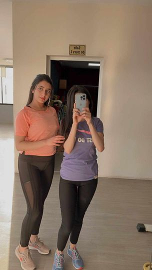
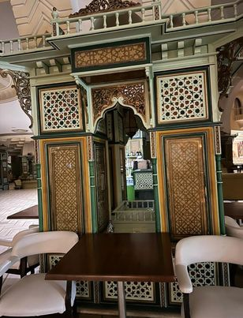
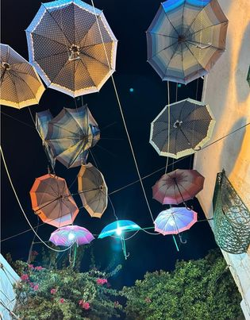
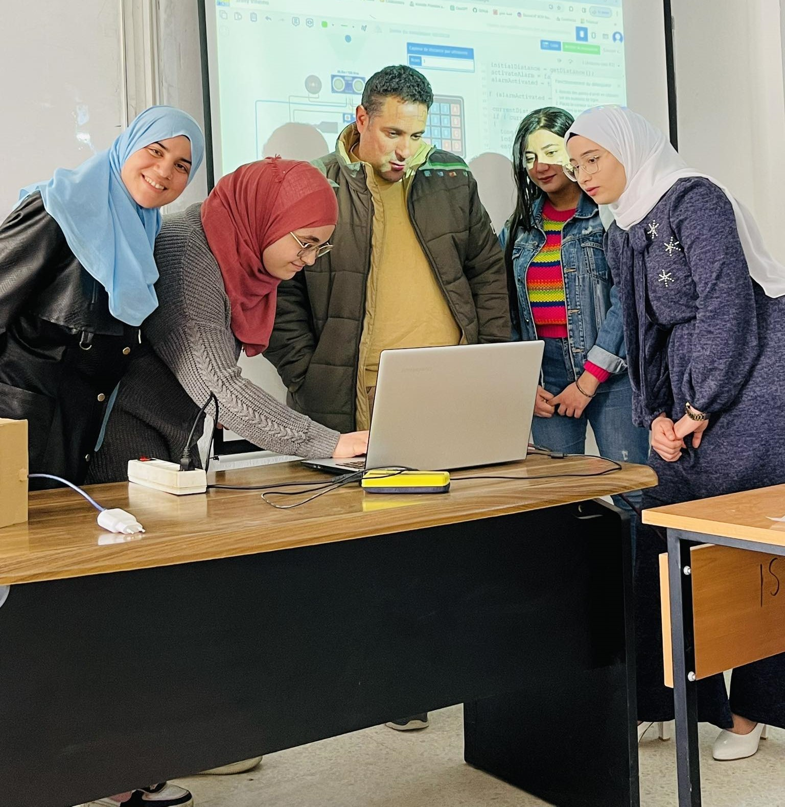
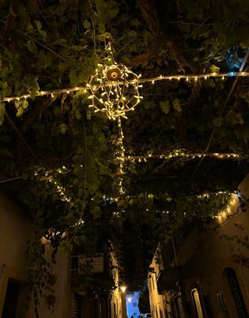
 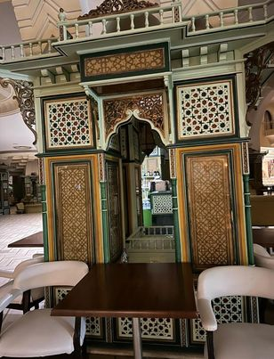
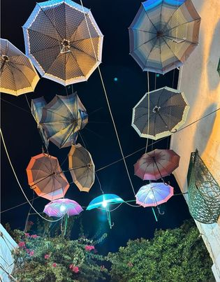
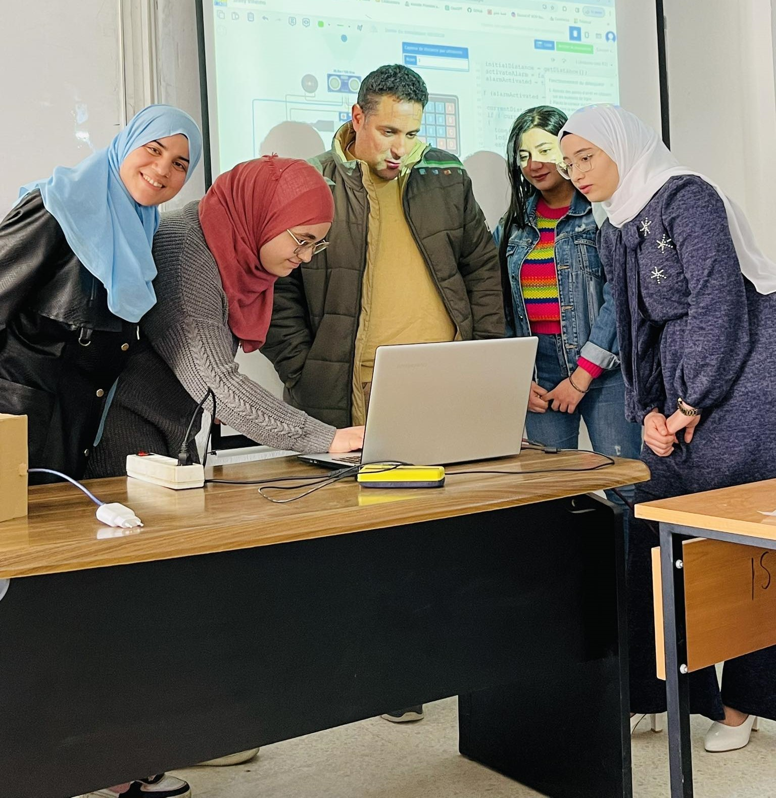
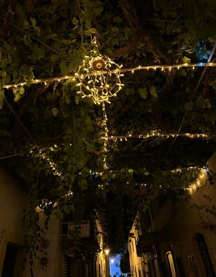
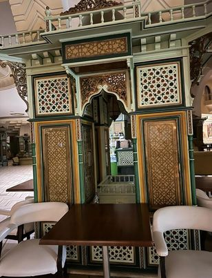
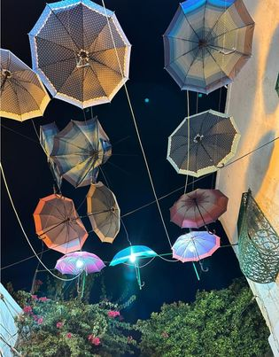
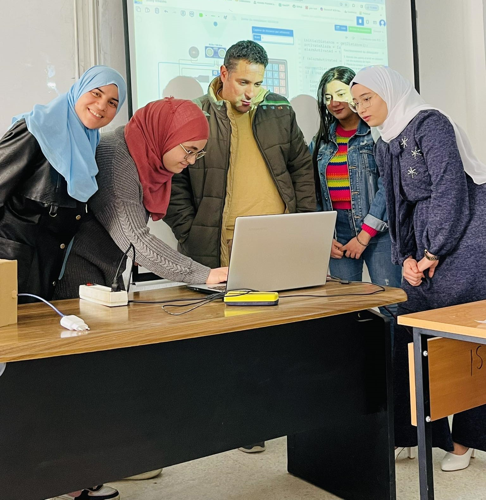
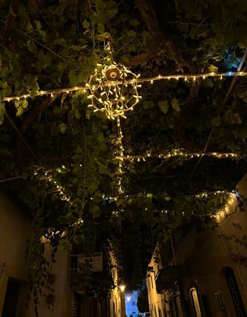